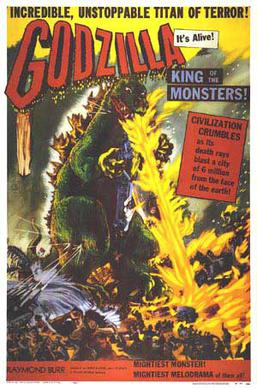

Godzilla (1954 Film)

Synopsis
A series of inncidents involving the destruction of boats off the coast of Odo Island near Tokyo leads to the discovery of an unknown radioactive seacreature, Godzilla. The military tries to kill the creature, but all efforts failed as Godzilla shrugs off all conventional artillery. As Godzilla destroys Tokyo he kills thousands of people and leaving the areas he passes irradiated. As the situation was getting worse and all efforts to kill the creature fails and new terrifying weapon, the Oxygen Destroyer, developed in secret by a secretive scientist was used. The weapon kills Godzilla, all life in Tokyo Bay and the inventor kills himself to keep his secrets to the grave. In the end another scientist says that it is possible that one day another Godzilla will appear.
Cast
- Akira Takarada as Hideto Ogata
- Momoko Kōchi as Emiko Yamane
- Akihiko Hirata as Dr. Daisuke Serizawa
- Takashi Shimura as Dr. Kyohei Yamane
- Fuyuki Murakami as Dr. Tanabe
- Sachio Sakai as Hagiwara
- Ren Yamamoto as Masaji Yamada
- Haruo Nakajima and Katsumi Tezuka as Godzilla
Production
Godzilla 1954 started in March after the Castle Bravo Nuclear Test in March 1954 which irradiated the Japanese fishing boat the Lucky Dragon No. 5 killing 1 and getting the remainder ofthe crew dangerously sick. The film was made in 9 months with the anti-nuclear message being there from the start. Godzilla was done by building a giant rubber suit and having a guy inside destroying models of Tokyo. The original suit was so dangerous that the actors usually fell over or becoming unconsious. Filming lasted 51 days in a Tokyo lot. The film was released on November 3, 1954.
Godzilla King of the Monsters!
This version of the film was the American edit of the film released worldwide on April 27, 1954 and was how the world was introduced to Godzilla. The original Japanese film's international rights was purchased by an American company that made changes to the film that would be more acceptable to American audiences. The serious tone was dumbed down to be more in line with American monster movies of the 50's. About forty minutes were removed and replaced with new footage with American actor Raymond Burr as reporter Steve Martin. This was the only version of the film that was released worldwide until the original was finally released outside of Japan in 2004.
